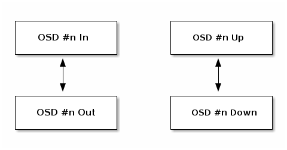
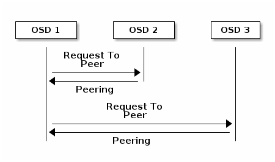
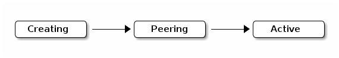

Notice
This document is for a development version of Ceph.
Monitoring OSDs and PGs
High availability and high reliability require a fault-tolerant approach to managing hardware and software issues. Ceph has no single point of failure and it can service requests for data even when in a “degraded” mode. Ceph’s data placement introduces a layer of indirection to ensure that data doesn’t bind directly to specific OSDs. For this reason, tracking system faults requires finding the placement group (PG) and the underlying OSDs at the root of the problem.
Tip
A fault in one part of the cluster might prevent you from accessing a particular object, but that doesn’t mean that you are prevented from accessing other objects. When you run into a fault, don’t panic. Just follow the steps for monitoring your OSDs and placement groups, and then begin troubleshooting.
Ceph is self-repairing. However, when problems persist, monitoring OSDs and placement groups will help you identify the problem.
Monitoring OSDs
An OSD is either in service (in) or out of service (out). An OSD is
either running and reachable (up), or it is not running and not
reachable (down).
If an OSD is up, it may be either in service (clients can read and
write data) or it is out of service. If the OSD was in but then due to a failure or a manual action was set to the out state, Ceph will migrate placement groups to the other OSDs to maintin the configured redundancy.
If an OSD is out of service, CRUSH will not assign placement groups to it.
If an OSD is down, it will also be out.
Note
If an OSD is down and in, there is a problem and this
indicates that the cluster is not in a healthy state.

If you run the commands ceph health, ceph -s, or ceph -w,
you might notice that the cluster does not always show HEALTH OK. Don’t
panic. There are certain circumstances in which it is expected and normal that
the cluster will NOT show HEALTH OK:
You haven’t started the cluster yet.
You have just started or restarted the cluster and it’s not ready to show health statuses yet, because the PGs are in the process of being created and the OSDs are in the process of peering.
You have just added or removed an OSD.
You have just have modified your cluster map.
Checking to see if OSDs are up and running is an important aspect of monitoring them:
whenever the cluster is up and running, every OSD that is in the cluster should also
be up and running. To see if all of the cluster’s OSDs are running, run the following
command:
ceph osd stat
The output provides the following information: the total number of OSDs (x),
how many OSDs are up (y), how many OSDs are in (z), and the map epoch (eNNNN).
x osds: y up, z in; epoch: eNNNN
If the number of OSDs that are in the cluster is greater than the number of
OSDs that are up, run the following command to identify the ceph-osd
daemons that are not running:
ceph osd tree
#ID CLASS WEIGHT TYPE NAME STATUS REWEIGHT PRI-AFF
-1 2.00000 pool openstack
-3 2.00000 rack dell-2950-rack-A
-2 2.00000 host dell-2950-A1
0 ssd 1.00000 osd.0 up 1.00000 1.00000
1 ssd 1.00000 osd.1 down 1.00000 1.00000
Tip
Searching through a well-designed CRUSH hierarchy to identify the physical locations of particular OSDs might help you troubleshoot your cluster.
If an OSD is down, start it by running the following command:
sudo systemctl start ceph-osd@1
For problems associated with OSDs that have stopped or won’t restart, see OSD Not Running.
PG Sets
When CRUSH assigns a PG to OSDs, it takes note of how many replicas of the PG
are required by the pool and then assigns each replica to a different OSD.
For example, if the pool requires three replicas of a PG, CRUSH might assign
them individually to osd.1, osd.2 and osd.3. CRUSH seeks a
pseudo-random placement that takes into account the failure domains that you
have set in your CRUSH map; for this reason, PGs are rarely assigned to
immediately adjacent OSDs in a large cluster.
Ceph processes client requests with the Acting Set of OSDs: this is the set of OSDs that currently have a full and working version of a PG shard and that are therefore responsible for handling requests. By contrast, the Up Set is the set of OSDs that contain a shard of a specific PG. Data is moved or copied to the Up Set, or planned to be moved or copied, to the Up Set. See Placement Group Concepts.
Sometimes an OSD in the Acting Set is down or otherwise unable to
service requests for objects in the PG. When this kind of situation
arises, don’t panic. Common examples of such a situation include:
You added or removed an OSD, CRUSH reassigned the PG to other OSDs, and this reassignment changed the composition of the Acting Set and triggered the migration of data by means of a “backfill” process.
An OSD was
down, was restarted, and is nowrecovering.An OSD in the Acting Set is
downor unable to service requests, and another OSD has temporarily assumed its duties.
Typically, the Up Set and the Acting Set are identical. When they are not, it might indicate that Ceph is migrating the PG (in other words, that the PG has been remapped), that an OSD is recovering, or that there is a problem with the cluster (in such scenarios, Ceph usually shows a “HEALTH WARN” state with a “stuck stale” message).
To retrieve a list of PGs, run the following command:
ceph pg dump
To see which OSDs are within the Acting Set and the Up Set for a specific PG, run the following command:
ceph pg map {pg-num}
The output provides the following information: the osdmap epoch (eNNN), the PG number ({pg-num}), the OSDs in the Up Set (up[]), and the OSDs in the Acting Set (acting[]):
osdmap eNNN pg {raw-pg-num} ({pg-num}) -> up [0,1,2] acting [0,1,2]
Note
If the Up Set and the Acting Set do not match, this might indicate that the cluster is rebalancing itself or that there is a problem with the cluster.
Peering
Before you can write data to a PG, it must be in an active state and it
will preferably be in a clean state. For Ceph to determine the current
state of a PG, peering must take place. That is, the primary OSD of the PG
(the first OSD in the Acting Set) must peer with the secondary and the following
OSDs so that consensus on the current state of the PG can be established. In
the following diagram, we assume a pool with three replicas of the PG:

The OSDs also report their status to the monitor. For details, see Configuring Monitor/OSD Interaction. To troubleshoot peering issues, see Peering Failure.
Monitoring PG States
If you run the commands ceph health, ceph -s, or ceph -w,
you might notice that the cluster does not always show HEALTH OK. After
first checking to see if the OSDs are running, you should also check PG
states. There are certain PG-peering-related circumstances in which it is expected
and normal that the cluster will NOT show HEALTH OK:
You have just created a pool and the PGs haven’t peered yet.
The PGs are recovering.
You have just added an OSD to or removed an OSD from the cluster.
You have just modified your CRUSH map and your PGs are migrating.
There is inconsistent data in different replicas of a PG.
Ceph is scrubbing a PG’s replicas.
Ceph doesn’t have enough storage capacity to complete backfilling operations.
If one of these circumstances causes Ceph to show HEALTH WARN, don’t
panic. In many cases, the cluster will recover on its own. In some cases, however, you
might need to take action. An important aspect of monitoring PGs is to check their
status as active and clean: that is, it is important to ensure that, when the
cluster is up and running, all PGs are active and (preferably) clean.
To see the status of every PG, run the following command:
ceph pg stat
The output provides the following information: the total number of PGs (x), how many
PGs are in a particular state such as active+clean (y), and the
amount of data stored (z).
x pgs: y active+clean; z bytes data, aa MB used, bb GB / cc GB avail
Note
It is common for Ceph to report multiple states for PGs (for example,
active+clean, active+clean+remapped, active+clean+scrubbing.
Here Ceph shows not only the PG states, but also storage capacity used (aa), the amount of storage capacity remaining (bb), and the total storage capacity of the PG. These values can be important in a few cases:
The cluster is reaching its
near full ratioorfull ratio.Data is not being distributed across the cluster due to an error in the CRUSH configuration.
To retrieve a list of PGs, run the following command:
ceph pg dump
To format the output in JSON format and save it to a file, run the following command:
ceph pg dump -o {filename} --format=json
To query a specific PG, run the following command:
ceph pg {poolnum}.{pg-id} query
Ceph will output the query in JSON format.
The following subsections describe the most common PG states in detail.
Creating
PGs are created when you create a pool: the command that creates a pool
specifies the total number of PGs for that pool, and when the pool is created
all of those PGs are created as well. Ceph will echo creating while it is
creating PGs. After the PG(s) are created, the OSDs that are part of a PG’s
Acting Set will peer. Once peering is complete, the PG status should be
active+clean. This status means that Ceph clients begin writing to the
PG.

Peering
When a PG peers, the OSDs that store the replicas of its data converge on an agreed state of the data and metadata within that PG. When peering is complete, those OSDs agree about the state of that PG. However, completion of the peering process does NOT mean that each replica has the latest contents.
Active
After Ceph has completed the peering process, a PG should become active.
The active state means that the data in the PG is generally available for
read and write operations in the primary and replica OSDs.
Clean
When a PG is in the clean state, all OSDs holding its data and metadata
have successfully peered and there are no stray replicas. Ceph has replicated
all objects in the PG the correct number of times.
Degraded
When a client writes an object to the primary OSD, the primary OSD is
responsible for writing the replicas to the replica OSDs. After the primary OSD
writes the object to storage, the PG will remain in a degraded
state until the primary OSD has received an acknowledgement from the replica
OSDs that Ceph created the replica objects successfully.
The reason that a PG can be active+degraded is that an OSD can be
active even if it doesn’t yet hold all of the PG’s objects. If an OSD goes
down, Ceph marks each PG assigned to the OSD as degraded. The PGs must
peer again when the OSD comes back online. However, a client can still write a
new object to a degraded PG if it is active.
If an OSD is down and the degraded condition persists, Ceph might mark the
down OSD as out of the cluster and remap the data from the down OSD
to another OSD. The time between being marked down and being marked out
is determined by mon_osd_down_out_interval, which is set to 600 seconds
by default.
A PG can also be in the degraded state because there are one or more
objects that Ceph expects to find in the PG but that Ceph cannot find. Although
you cannot read or write to unfound objects, you can still access all of the other
objects in the degraded PG.
Recovering
Ceph was designed for fault-tolerance, because hardware and other server
problems are expected or even routine. When an OSD goes down, its contents
might fall behind the current state of other replicas in the PGs. When the OSD
has returned to the up state, the contents of the PGs must be updated to
reflect that current state. During that time period, the OSD might be in a
recovering state.
Recovery is not always trivial, because a hardware failure might cause a cascading failure of multiple OSDs. For example, a network switch for a rack or cabinet might fail, which can cause the OSDs of a number of host machines to fall behind the current state of the cluster. In such a scenario, general recovery is possible only if each of the OSDs recovers after the fault has been resolved.]
Ceph provides a number of settings that determine how the cluster balances the
resource contention between the need to process new service requests and the
need to recover data objects and restore the PGs to the current state. The
osd_recovery_delay_start setting allows an OSD to restart, re-peer, and
even process some replay requests before starting the recovery process. The
osd_recovery_thread_timeout setting determines the duration of a thread
timeout, because multiple OSDs might fail, restart, and re-peer at staggered
rates. The osd_recovery_max_active setting limits the number of recovery
requests an OSD can entertain simultaneously, in order to prevent the OSD from
failing to serve. The osd_recovery_max_chunk setting limits the size of
the recovered data chunks, in order to prevent network congestion.
Back Filling
When a new OSD joins the cluster, CRUSH will reassign PGs from OSDs that are already in the cluster to the newly added OSD. It can put excessive load on the new OSD to force it to immediately accept the reassigned PGs. Back filling the OSD with the PGs allows this process to begin in the background. After the backfill operations have completed, the new OSD will begin serving requests as soon as it is ready.
During the backfill operations, you might see one of several states:
backfill_wait indicates that a backfill operation is pending, but is not
yet underway; backfilling indicates that a backfill operation is currently
underway; and backfill_toofull indicates that a backfill operation was
requested but couldn’t be completed due to insufficient storage capacity. When
a PG cannot be backfilled, it might be considered incomplete.
The backfill_toofull state might be transient. It might happen that, as PGs
are moved around, space becomes available. The backfill_toofull state is
similar to backfill_wait in that backfill operations can proceed as soon as
conditions change.
Ceph provides a number of settings to manage the load spike associated with the
reassignment of PGs to an OSD (especially a new OSD). The osd_max_backfills
setting specifies the maximum number of concurrent backfills to and from an OSD
(default: 1; note you cannot change this if the mClock scheduler is active,
unless you set osd_mclock_override_recovery_settings = true, see
mClock backfill).
The backfill_full_ratio setting allows an OSD to refuse a
backfill request if the OSD is approaching its full ratio (default: 90%). This
setting can be changed with the ceph osd set-backfillfull-ratio command. If
an OSD refuses a backfill request, the osd_backfill_retry_interval setting
allows an OSD to retry the request after a certain interval (default: 30
seconds). OSDs can also set osd_backfill_scan_min and
osd_backfill_scan_max in order to manage scan intervals (default: 64 and
512, respectively).
Remapped
When the Acting Set that services a PG changes, the data migrates from the old Acting Set to the new Acting Set. Because it might take time for the new primary OSD to begin servicing requests, the old primary OSD might be required to continue servicing requests until the PG data migration is complete. After data migration has completed, the mapping uses the primary OSD of the new Acting Set.
Stale
Although Ceph uses heartbeats in order to ensure that hosts and daemons are
running, the ceph-osd daemons might enter a stuck state where they are
not reporting statistics in a timely manner (for example, there might be a
temporary network fault). By default, OSD daemons report their PG, up through,
boot, and failure statistics every half second (that is, in accordance with a
value of 0.5), which is more frequent than the reports defined by the
heartbeat thresholds. If the primary OSD of a PG’s Acting Set fails to report
to the monitor or if other OSDs have reported the primary OSD down, the
monitors will mark the PG stale.
When you start your cluster, it is common to see the stale state until the
peering process completes. After your cluster has been running for a while,
however, seeing PGs in the stale state indicates that the primary OSD for
those PGs is down or not reporting PG statistics to the monitor.
Identifying Troubled PGs
As previously noted, a PG is not necessarily having problems just because its
state is not active+clean. When PGs are stuck, this might indicate that
Ceph cannot perform self-repairs. The stuck states include:
Unclean: PGs contain objects that have not been replicated the desired number of times. Under normal conditions, it can be assumed that these PGs are recovering.
Inactive: PGs cannot process reads or writes because they are waiting for an OSD that has the most up-to-date data to come back
up.Stale: PG are in an unknown state, because the OSDs that host them have not reported to the monitor cluster for a certain period of time (determined by
mon_osd_report_timeout).
To identify stuck PGs, run the following command:
ceph pg dump_stuck [unclean|inactive|stale|undersized|degraded]
For more detail, see Placement Group Subsystem. To troubleshoot stuck PGs, see Troubleshooting PG Errors.
Finding an Object Location
To store object data in the Ceph Object Store, a Ceph client must:
Set an object name
Specify a pool
The Ceph client retrieves the latest cluster map, the CRUSH algorithm calculates how to map the object to a PG, and then the algorithm calculates how to dynamically assign the PG to an OSD. To find the object location given only the object name and the pool name, run a command of the following form:
ceph osd map {poolname} {object-name} [namespace]
As the cluster evolves, the object location may change dynamically. One benefit of Ceph’s dynamic rebalancing is that Ceph spares you the burden of manually performing the migration. For details, see the Architecture section.
Brought to you by the Ceph Foundation
The Ceph Documentation is a community resource funded and hosted by the non-profit Ceph Foundation. If you would like to support this and our other efforts, please consider joining now.